1. De la posición al escenario de cobertura
La primera lección explicó por qué el creador de mercado (market maker, MM) compensa el riesgo Delta de su inventario. Esta segunda sesión pregunta qué ocurre después: aunque conserve las mismas opciones, su Delta cambia al variar el precio, transcurrir el tiempo o moverse la volatilidad implícita (IV).
Un dato de posicionamiento aporta contexto porque distingue opciones compradas y vendidas. La sensibilidad de una opción por sí sola no revela el riesgo neto del grupo. La proyección añade una pregunta condicional: «si el libro permaneciera igual y el mercado llegara a este precio a esta hora, ¿qué exposición tendría?».
El resultado ayuda a interpretar posibles presiones, zonas de amortiguación o aceleración. No demuestra que los futuros se ejecuten exactamente como supone el modelo, ni que esos flujos dominen al resto del mercado. Este documento tiene estado Referencia; ejemplos y ficha de estudio son ampliaciones propias, sin reglas de entrada ni ejecución.
El índice de capítulos reproduce la segmentación aportada por el usuario. Las referencias de pasajes proceden de la transcripción. Los capítulos asociados a figuras orientan la búsqueda: no son minutos exactos de esas capturas. La hora en el nombre Bandicam indica cuándo se grabó el archivo, no su posición en YouTube.
| Inicio aportado | Contenido normalizado |
|---|---|
| Lección 2 · Introducción · 00:00 | Continuidad: posiciones y cobertura Delta |
| Lección 2 · Griegos de segundo orden · 04:00 | Precio, tiempo e IV cambian Delta |
| Lección 2 · Gamma · 07:47 | Cómo cambia Delta con el precio |
| Lección 2 · Gamma positiva y negativa · 11:10 | Cobertura contra o a favor del movimiento |
| Lección 2 · Datos de posición y 0DTE · 18:05 | Posición neta, exposición y vencimiento próximo |
| Lección 2 · Charm · 24:15 | Efecto del tiempo sobre Delta |
| Lección 2 · Vanna · 34:07 | Efecto de IV sobre Delta |
| Lección 2 · Combinar las sensibilidades · 46:01 | Reacción, paso del tiempo y datos |
| Lección 2 · Perfiles por strike · 51:54 | Contribuciones al precio actual |
| Lección 2 · Superficies y mapas de calor · 57:24 | Exposición agregada proyectada |
| Lección 2 · Otros y organización · 1:08:28 | Comparación de vistas e integración comentada |
2. Las sensibilidades de Delta
Delta mide el cambio local de la prima ante un cambio del subyacente. Gamma, Charm y Vanna describen cómo cambia ese Delta. Son derivadas de segundo orden del valor de la opción, o sensibilidades de primer orden de Delta. La distinción evita confundir Theta con Charm y Vega con Vanna: las primeras actúan sobre el valor; las segundas, sobre Delta.
| Magnitud | Qué cambia | Qué se mantiene para aislarla | Unidad de lectura |
|---|---|---|---|
| Gamma Γ | Delta por cambio de precio S | Tiempo, IV y demás entradas | Delta por punto de S |
| Charm C | Delta por tiempo transcurrido | S, IV y demás entradas | Delta por día u hora, según escala |
| Vanna V | Delta por cambio de IV | S, tiempo y demás entradas | Delta por unidad de IV; aquí por punto porcentual |
Es una aproximación local con unidades compatibles, no una fórmula exacta para saltos grandes. Las propias sensibilidades varían. El cálculo agregado requiere ponderar cada contrato por su posición y multiplicador; la Vanna de una cartera exige además definir cómo se mueve la IV de cada serie.
Lección 2 · Mapa de sensibilidades, pasaje transcrito · 03:56
Tres formas de cambiar Delta
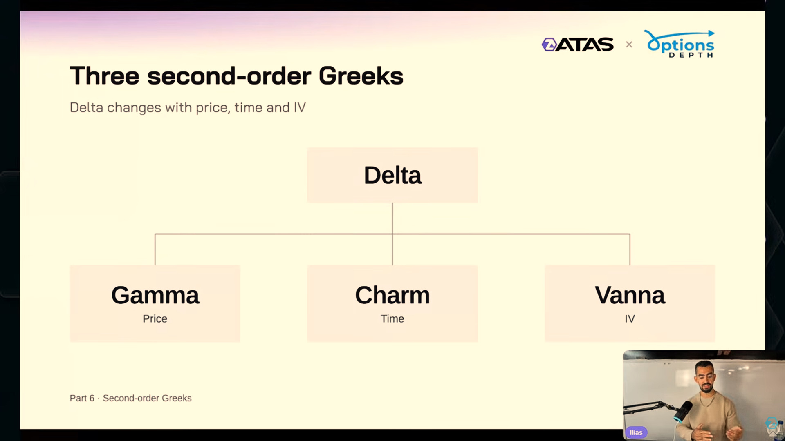
- Three second-order Greeks → Tres griegos de segundo orden
- Price / Time / IV → Precio / tiempo / volatilidad implícita
- Delta changes with price, time and IV → Delta cambia con el precio, el tiempo y la IV
Las tres ramas explican variaciones de Delta, no tres predicciones de dirección.
ILIAS-L2-004 · Material del seminario ATAS × OptionsDepth / Ilias, capturado y aportado por el usuario. Lección 2 · Capítulo relacionado, inicio aportado · 04:00. Minutaje exacto de esta captura pendiente de localizar. Original inglés intacto; pulse la imagen para ampliarla.
Recordatorio animado de Delta
- Delta is the slope → Delta es la pendiente
- A reminder from session 1 → Recordatorio de la primera sesión
- Option value / Stock price → Valor de la opción / precio del subyacente
- Call / Put → Opción de compra / opción de venta
Clip de 9,8 s. Traducción explicativa junto al reproductor; no se han añadido subtítulos al audio.
ILIAS-L2-076 · Material del seminario ATAS × OptionsDepth / Ilias, capturado y aportado por el usuario. Lección 2 · Capítulo relacionado, inicio aportado · 04:00. Minutaje exacto de esta captura pendiente de localizar. Duración 9,8 s; sin reproducción automática. Traducción de rótulos junto al clip; audio no subtitulado.
3. Gamma: la pendiente de Delta
Visualice dos gráficos: la pendiente de la curva valor–precio es Delta; la pendiente de Delta–precio es Gamma. Una call comprada tiene Delta positivo y una put comprada, negativo; ambas opciones ordinarias compradas tienen Gamma positivo. Cuando S sube, Delta de la call aumenta y el de la put se vuelve menos negativo. −0,49 → −0,44 también es un aumento.
Call con Delta 0,51 y Gamma 0,054 por USD. Si S sube 1 USD, Delta pasa aproximadamente a 0,564. Para una put equivalente con Delta −0,49, el mismo Gamma daría −0,436. No cambie Gamma de signo únicamente porque cambia call por put.
En el modelo ilustrado, Gamma es mayor cerca de at the money (ATM: S cercano al precio de ejercicio K) y puede concentrarse al acercarse el vencimiento. Con menos tiempo, Delta puede pasar de valores cercanos a cero a valores cercanos a uno en un intervalo de precios más estrecho. Con mayor IV, esa transición se distribuye en una banda más amplia en las condiciones mostradas.
«Gamma aumenta al vencer» no es universal: lejos de ATM puede disminuir hacia cero. La descripción oral de crecimiento «exponencial» no se adopta como ley. Cerca de ATM, el modelo BSM tiene una dependencia aproximada de 1/(S × IV × raíz del tiempo restante), bajo sus supuestos. No extrapole una pendiente fija hasta el vencimiento.
La igualdad de Gamma de call y put se refiere a contratos equivalentes, con el mismo subyacente, strike y vencimiento bajo el modelo europeo. Libros con distintos contratos o posiciones pueden tener otra exposición neta.
Lección 2 · Gamma: capítulo aportado · 07:47 · Lección 2 · Call, put y cambio de Delta, pasaje transcrito · 08:11
Tiempo e IV modifican Gamma

- Time and IV change the slope → El tiempo y la IV cambian la pendiente
- Less time: steeper. More IV: flatter → Menos tiempo: más inclinada
- más IV: más plana, cerca de ATM en este modelo → undefined
- Stock price → Precio del subyacente
- Gamma at $100 → Gamma con el subyacente en 100 USD
Gamma mostrado: 0,054 (50 días, 20 %); 0,170 (5 días, 20 %); 0,085 (5 días, 40 %).
ILIAS-L2-012 · Material del seminario ATAS × OptionsDepth / Ilias, capturado y aportado por el usuario. Lección 2 · Capítulo relacionado, inicio aportado · 07:47. Minutaje exacto de esta captura pendiente de localizar. Original inglés intacto; pulse la imagen para ampliarla.
Gamma es la pendiente de Delta
- Gamma is the slope of delta → Gamma es la pendiente de Delta
- Same slope for the call and the put → Misma pendiente para la call y la put del ejemplo
- Call delta / Put delta → Delta de la call / Delta de la put
- Gamma, both → Gamma de ambas
Clip de 10,0 s. Observe las tangentes y cómo cambia Gamma al cambiar S.
ILIAS-L2-077 · Material del seminario ATAS × OptionsDepth / Ilias, capturado y aportado por el usuario. Lección 2 · Capítulo relacionado, inicio aportado · 07:47. Minutaje exacto de esta captura pendiente de localizar. Duración 10,0 s; sin reproducción automática. Traducción de rótulos junto al clip; audio no subtitulado.
4. Gamma neta y respuesta de cobertura
Una cartera de opciones compradas puede aportar Gamma positiva; una posición corta invierte esa contribución. El signo relevante es la exposición agregada de los MM, incluyendo compensaciones entre strikes, calls, puts y vencimientos. Gamma positiva no significa que el precio tenga que subir; negativa tampoco significa caída.
Cobertura objetivo en ES H = −D / 50
Ajuste ES = H nuevo − H anterior = −cambio de D / 50
q es positivo para contratos comprados y negativo para vendidos. Para SPX, el multiplicador es 100 USD por punto; ES vale 50 USD por punto. Aquí se aproxima el cambio de SPX al de ES y se omiten base, otras coberturas, costes y redondeo a contratos enteros.
| Gamma neta MM | S sube | S baja | Posible efecto del reajuste |
|---|---|---|---|
| Positiva | Delta aumenta → vender cobertura | Delta disminuye → comprar cobertura | Contra el movimiento: puede amortiguarlo |
| Negativa | Delta disminuye → comprar cobertura | Delta aumenta → vender cobertura | A favor: puede amplificarlo |
MM largo de 100 puts SPX con Delta −0,50: D = −5.000 USD/punto, cobertura +100 ES. Si S sube y Delta pasa a −0,45, D = −4.500 y cobertura +90 ES. El ajuste consiste en vender 10 ES, aunque la put tenga Delta negativo. Importa el cambio de Delta neto.
Ilias utiliza «calmar» y «empujar» el precio como metáforas del flujo compensador. El resultado requiere suficiente tamaño frente a la liquidez y puede ser dominado por noticias, órdenes de clientes o posiciones en otros productos. Los MM pueden cubrir con instrumentos distintos, por umbrales y en momentos distintos; el objetivo algebraico no acredita ejecución instantánea.
Lección 2 · Gamma positiva y negativa: capítulo aportado · 11:10
Gamma larga y corta
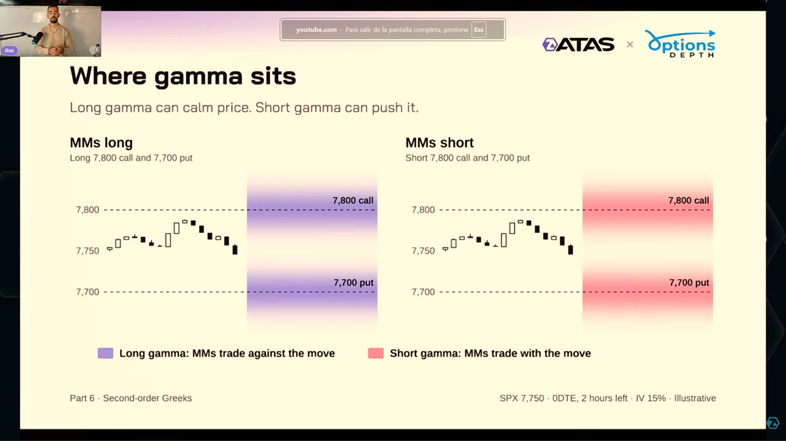
- Where gamma sits → Dónde se concentra Gamma
- MMs long / MMs short → Creadores de mercado con opciones compradas / vendidas
- Trade against the move / with the move → Cubrir en contra del movimiento / a favor
- Long gamma / Short gamma → Gamma positiva / negativa
Morado = Gamma larga; rojo = corta en esta figura. Los niveles 7.800 y 7.700 son ilustrativos.
ILIAS-L2-019 · Material del seminario ATAS × OptionsDepth / Ilias, capturado y aportado por el usuario. Lección 2 · Capítulo relacionado, inicio aportado · 11:10. Minutaje exacto de esta captura pendiente de localizar. Original inglés intacto; pulse la imagen para ampliarla.
Cobertura con Gamma positiva
- Long gamma: against the move → Gamma positiva: cobertura en contra del movimiento
- Price up / Price down → Sube el precio / baja el precio
- MMs sell ES / MMs buy ES → Los creadores venden ES / compran ES
- Hedging can calm price → La cobertura puede amortiguar el precio
Clip de 9,2 s. Muestra Gamma larga; no es una grabación de ejecuciones reales.
ILIAS-L2-078 · Material del seminario ATAS × OptionsDepth / Ilias, capturado y aportado por el usuario. Lección 2 · Capítulo relacionado, inicio aportado · 11:10. Minutaje exacto de esta captura pendiente de localizar. Duración 9,2 s; sin reproducción automática. Traducción de rótulos junto al clip; audio no subtitulado.
5. GEX, posición y opciones 0DTE
Gamma exposure (GEX: exposición Gamma) combina el Gamma unitario del contrato con el inventario firmado. En la notación simplificada del seminario: posición MM × Gamma. Para una cartera, se suman las contribuciones después de homogeneizar sus unidades.
MM neto corto de 5.000 opciones SPX, Gamma 0,01 por punto: −5.000 × 0,01 = −50 unidades Delta SPX por punto. Con multiplicador 100, un punto de subida cambia D aproximadamente en −5.000 USD/punto. El ajuste compensador sería comprar 100 ES. Un punto de caída invierte el cambio y requeriría vender 100 ES, manteniendo Gamma e inventario constantes.
Algunos proveedores expresan GEX en dólares por movimiento del 1 %, otros por punto o en contratos equivalentes. «100 ES por punto» describe sensibilidad de cobertura, no una posición inicial de 100 ES ni 100 órdenes ya colocadas. Tampoco se deben mezclar exposiciones por 1 % con exposiciones por punto sin conversión.
0DTE significa que la opción vence ese día. El vencimiento próximo puede concentrar Gamma y Charm cerca de strikes relevantes y volver importantes pequeños desplazamientos intradía. No significa que cualquier strike 0DTE tenga una gran sensibilidad, ni que excluir otros vencimientos describa todo el riesgo del libro.
Una diapositiva aportada cita 66 % del volumen SPX como 0DTE en julio de 2026. La sesión menciona unas 19.000 series y 9,8 millones de contratos en un libro de MM. Se registran como cifras del instructor y del ámbito que muestra, sin verificación independiente de metodología ni vigencia. Serie cotizada, volumen negociado y contratos en inventario son magnitudes diferentes.
Lección 2 · Posicionamiento y efecto 0DTE: capítulo aportado · 18:05
Calcular GEX exige conocer la posición
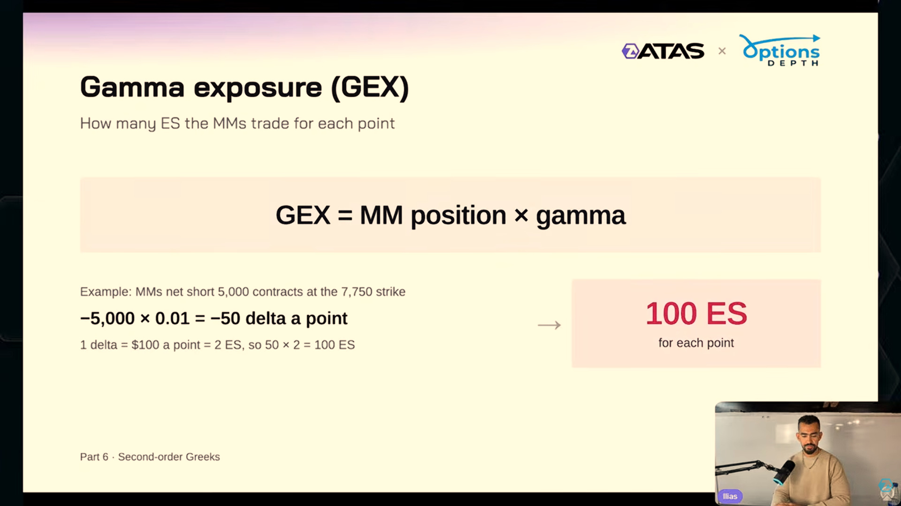
- Gamma exposure (GEX) → Exposición Gamma
- MM position × gamma → Posición neta del creador de mercado × Gamma
- Net short 5,000 contracts → Posición neta corta de 5.000 contratos
- For each point → Por cada punto de movimiento SPX
−5.000 × 0,01 = −50 unidades Delta SPX por punto; subir un punto requiere comprar 100 ES en el supuesto aislado.
ILIAS-L2-021 · Material del seminario ATAS × OptionsDepth / Ilias, capturado y aportado por el usuario. Lección 2 · Capítulo relacionado, inicio aportado · 18:05. Minutaje exacto de esta captura pendiente de localizar. Original inglés intacto; pulse la imagen para ampliarla.
6. Charm: Delta cambia aunque el precio no se mueva
Charm mide el cambio de Delta por el transcurso del tiempo manteniendo constantes otras entradas. Theta mide el cambio de valor por el tiempo. Una prima puede perder valor temporal y, simultáneamente, aumentar o disminuir su Delta según la relación S–K.
En este manual C = ∂Delta/∂t, donde t es tiempo transcurrido. Si una herramienta deriva respecto al tiempo restante τ, entonces ∂Delta/∂t = −∂Delta/∂τ, para el mismo modelo y unidades. Charm positivo aquí significa Delta neto creciente con el reloj → ventas de cobertura; Charm negativo significa Delta decreciente → compras. Compruebe convención y escala horaria o diaria antes de comparar proveedores.
Al acercarse el vencimiento, con S fijo separado de K, una call ITM (S > K) tiende a Delta +1 y una call OTM (S < K) a 0. Una put ITM (S < K) tiende a −1 y una put OTM (S > K) a 0. Por tanto, en las condiciones simplificadas mostradas, por encima de K aumenta Delta de ambas opciones compradas; por debajo disminuye. La posición corta invierte el efecto.
| Inventario comprado, precio fijo | Evolución al vencer | Reajuste aislado |
|---|---|---|
| Call OTM | Delta baja hacia 0 | Comprar cobertura |
| Call ITM | Delta sube hacia +1 | Vender cobertura |
| Put ITM | Delta baja hacia −1 | Comprar cobertura |
| Put OTM | Delta sube hacia 0 | Vender cobertura |
MM largo de 200 calls OTM SPX. En un intervalo, Delta baja de 0,20 a 0,15 por tiempo, con S e IV constantes. D cambia en 200 × (−0,05) × 100 = −1.000 USD/punto. Ajuste: comprar 20 ES. No ha hecho falta una bajada de S para generar el cambio de cobertura.
La sesión llama «pasivo» al mecanismo porque el reloj avanza sin requerir un movimiento de precio. Las operaciones de cobertura siguen siendo decisiones y órdenes. Cerca de vencimiento la sensibilidad puede concentrarse, pero no hay una tasa diaria constante ni una ley de atracción universal.
La aproximación «ATM conserva Delta 0,50» sirve a la ilustración; no es una identidad exacta con carry, tipos o dividendos, ni define Delta de manera suave en el punto de discontinuidad al vencer. «Por encima/por debajo» describe la forma mostrada, no un criterio de signo independiente del modelo para cualquier contrato.
Lección 2 · Charm: capítulo aportado · 24:15 · Lección 2 · Largos y cortos alrededor del strike, pasaje transcrito · 29:27 · Lección 2 · Ejercicio sobre call OTM, pasaje transcrito · 32:22
Charm a distintos precios
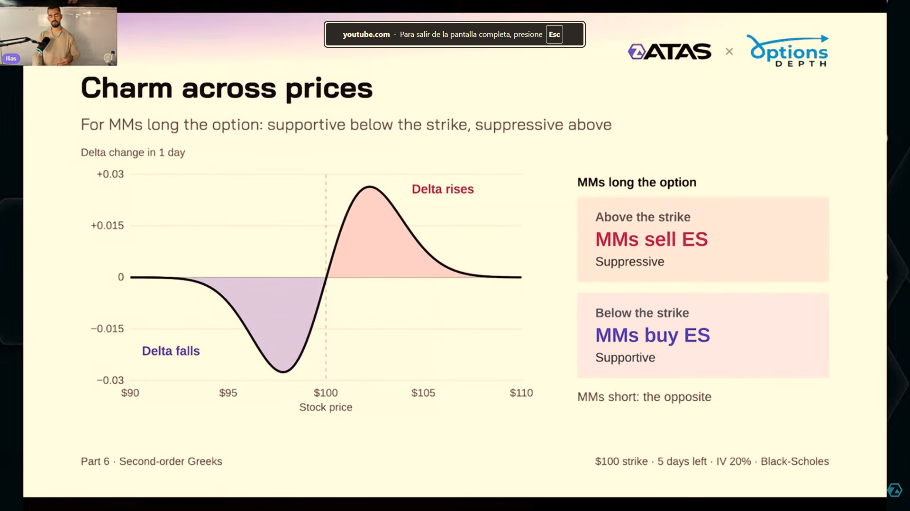
- Charm across prices → Charm a distintos precios
- Delta change in 1 day → Cambio de Delta en un día transcurrido
- Above / Below the strike → Por encima / por debajo del precio de ejercicio
- Suppressive / Supportive → Presión vendedora / compradora
- MMs short: the opposite → Posiciones cortas: efecto inverso
Supuestos de la figura: opción comprada, K = 100, 5 días, IV 20 %. El cruce cerca de K es una simplificación del modelo.
ILIAS-L2-030 · Material del seminario ATAS × OptionsDepth / Ilias, capturado y aportado por el usuario. Lección 2 · Capítulo relacionado, inicio aportado · 24:15. Minutaje exacto de esta captura pendiente de localizar. Original inglés intacto; pulse la imagen para ampliarla.
El inventario invierte el flujo temporal
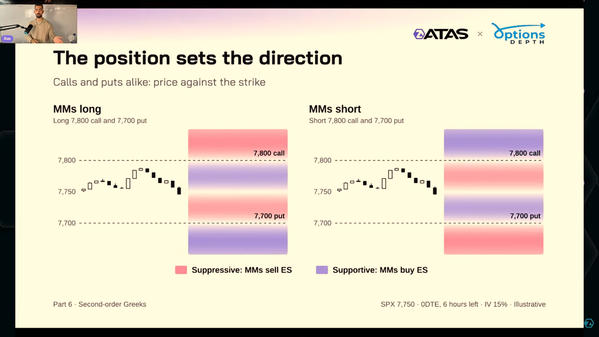
- The position sets the direction → La posición determina el sentido
- Calls and puts alike → La misma lógica para calls y puts
- MMs sell ES / MMs buy ES → Los creadores venden ES / compran ES
- Long / Short → Posición larga / corta
Con largos, el modelo muestra ventas por encima y compras por debajo; con cortos se invierte. No asegura pinning.
ILIAS-L2-032 · Material del seminario ATAS × OptionsDepth / Ilias, capturado y aportado por el usuario. Lección 2 · Capítulo relacionado, inicio aportado · 24:15. Minutaje exacto de esta captura pendiente de localizar. Original inglés intacto; pulse la imagen para ampliarla.
7. Vanna: el cambio de IV modifica Delta
Vanna mide la variación de Delta cuando cambia la volatilidad implícita. Vega responde cuánto cambia la prima; Vanna, cuánto cambia su sensibilidad direccional. La sesión usa IV que pasa del 20 % al 21 %: un punto porcentual, no un aumento relativo del 1 %.
Vanna por punto porcentual = Vanna decimal / 100
Cambio de Delta ≈ Vanna por punto porcentual × cambio de IV en puntos porcentuales
La ilustración muestra una curva de Delta más plana cuando aumenta IV: por debajo de K, Delta aumenta; por encima, disminuye. En puts, aumentar desde −0,70 a −0,60 es también un incremento. Las llamadas aproximaciones «hacia 0,50» o «hacia −0,50» son intuiciones de los ejemplos, no límites generales de cualquier modelo.
El signo de Vanna no se determina exactamente solo por S < K o S > K. En BSM depende de d₂ y puede cambiar cerca del strike, con tiempo, IV y carry. Se conserva la figura como explicación de sus supuestos; para clasificar una exposición real se usa el valor calculado y la posición neta.
| Vanna neta MM | IV sube | IV baja |
|---|---|---|
| Positiva | Delta aumenta → vender cobertura | Delta disminuye → comprar cobertura |
| Negativa | Delta disminuye → comprar cobertura | Delta aumenta → vender cobertura |
Relación precio–IV y eventos
Ilias explica un caso frecuente en índices: precio a la baja e IV al alza, o precio al alza e IV a la baja. Es un supuesto de escenario, no una correlación fija. Bajo esa relación, Vanna negativa puede generar cobertura contra el movimiento y Vanna positiva, a favor. Si cambia la relación precio–IV, cambia esa lectura; derive el signo multiplicando Vanna por la variación observada.
El IV crush es una caída brusca de IV, que puede suceder tras resolverse incertidumbre alrededor de un evento. La fuente usa decisiones de la Fed y resultados empresariales como ejemplos generales, sin acreditar una reacción garantizada en cada anuncio. Con caída de IV y Vanna neta positiva, Delta disminuiría y la cobertura requeriría compras; con negativa, ventas.
Vanna agregada = +30 unidades Delta SPX por punto porcentual. IV baja 2 puntos porcentuales: cambio de Delta = −60; cambio monetario = −6.000 USD/punto; ajuste +120 ES. Es una aproximación local a un desplazamiento uniforme supuesto de IV, no un pronóstico de flujo después de la Fed.
Cada strike y vencimiento tiene su propia IV. Un único VIX o una cifra global no sustituye una superficie de volatilidad. Para agregar Vanna con cambios no uniformes se suma qᵢ × Vᵢ × cambio de IVᵢ × multiplicadorᵢ. Puede haber compensaciones entre series.
Lección 2 · Vanna: capítulo aportado · 34:07 · Lección 2 · Relación precio–IV condicional, pasaje transcrito · 40:02 · Lección 2 · IV crush, pasaje transcrito · 43:45 · Lección 2 · Ejercicio de IV al alza, pasaje transcrito · 45:19
Vanna a distintos precios
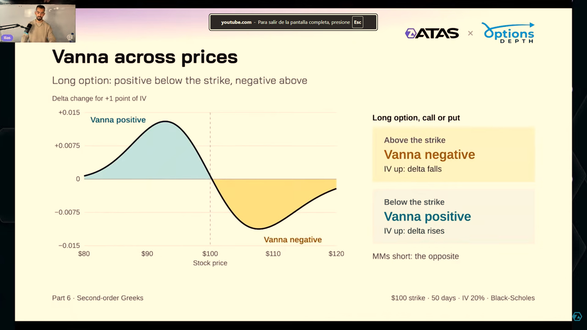
- Vanna across prices → Vanna a distintos precios
- Delta change for +1 point of IV → Cambio de Delta para +1 punto porcentual de IV
- IV up: delta falls / rises → Sube IV: Delta disminuye / aumenta
- Long option, call or put → Opción comprada, call o put
Aquí turquesa = Vanna positiva; amarillo = negativa. No traslade los colores de Gamma a este panel.
ILIAS-L2-040 · Material del seminario ATAS × OptionsDepth / Ilias, capturado y aportado por el usuario. Lección 2 · Capítulo relacionado, inicio aportado · 34:07. Minutaje exacto de esta captura pendiente de localizar. Original inglés intacto; pulse la imagen para ampliarla.
Caída de IV después de un evento
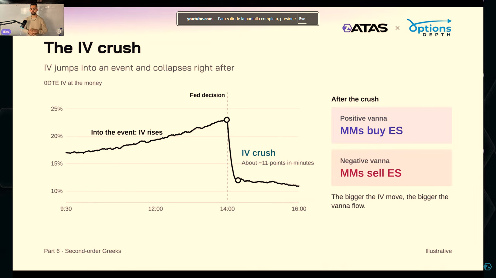
- The IV crush → Caída brusca de la volatilidad implícita
- Fed decision → Decisión de la Reserva Federal
- Into the event: IV rises → Antes del evento: sube la IV
- After the crush → Después de la caída de IV
- Positive vanna / Negative vanna → Vanna positiva / negativa
La curva es ilustrativa: no documenta una sesión concreta. Ante caída de IV, Vanna positiva implica compras y negativa ventas, aislando ese efecto.
ILIAS-L2-044 · Material del seminario ATAS × OptionsDepth / Ilias, capturado y aportado por el usuario. Lección 2 · Capítulo relacionado, inicio aportado · 34:07. Minutaje exacto de esta captura pendiente de localizar. Original inglés intacto; pulse la imagen para ampliarla.
8. Los efectos pueden sumarse o compensarse
Gamma requiere un cambio de S para producir el componente correspondiente del reajuste. Vanna requiere un cambio de IV. Charm aporta el efecto del reloj aun con ambos constantes. En una sesión real pueden actuar simultáneamente y modificar sus propias magnitudes; además, entran nuevas posiciones y vencen otras.
Suponga GEX = −50 unidades Delta SPX/punto; Charm = −20 unidades Delta SPX/hora transcurrida; Vanna = +30 unidades Delta SPX/punto porcentual. Cambios pequeños: S +1 punto, tiempo +0,5 horas e IV −1 punto porcentual.
Gamma: −50 × 1 = −50. Charm: −20 × 0,5 = −10. Vanna: 30 × (−1) = −30. Cambio total = −90 unidades Delta SPX = −9.000 USD/punto. Ajuste compensador: comprar 180 ES. Los tres componentes coinciden aquí; con IV al alza, Vanna compensaría parte de los otros dos.
Que exista un gran Gamma positivo no garantiza baja volatilidad: una compra dominante ajena al ajuste puede superar las ventas del libro. Un cambio de signo agregado (Gamma flip) identifica un cambio del mecanismo local de cobertura, condicionado a inventario y modelo vigentes; no marca automáticamente una ruptura ejecutable.
La metáfora «Gamma imán» puede mezclar dos mecanismos. Gamma positiva responde contra movimientos; Charm puede producir compras por debajo y ventas por encima de una concentración larga en la ilustración. La combinación puede favorecer permanencia cerca de una zona (pinning), sin asegurar que se alcance, se mantenga ni sea un objetivo deliberado de los MM.
Lección 2 · Combinar Gamma, Charm y Vanna: capítulo aportado · 46:01 · Lección 2 · Sensibilidad reactiva y efecto del reloj, pasaje transcrito · 47:21
9. Datos: inferir el inventario o identificar participantes
El seminario insiste en la calidad del inventario. El interés abierto (OI) informa de contratos abiertos; no identifica qué grupo los tiene comprados o vendidos. La Gamma del modelo puede ser correcta y la GEX incorrecta si se asigna mal el signo del inventario.
| Método explicado | Qué supone o registra | Limitación |
|---|---|---|
| Asignación ingenua (naive) | Atribuye posiciones MM según reglas generales sobre calls y puts | No observa el inventario real; no existe un signo MM universal por tipo de opción |
| Clasificación por agresor | Interpreta ejecuciones al ask como compras y al bid como ventas; supone contrapartida MM | Midpoint ambiguo, operaciones entre otros participantes, aperturas/cierres y órdenes complejas |
| Datos etiquetados por participante | Incorporan categoría, lado y cantidad según el proveedor | Exigen conocer cobertura, reconstrucción del inventario inicial, actualizaciones y alcance de la etiqueta |
Una estrategia de varias patas se negocia por su precio neto. Clasificar cada ejecución aislada contra bid/ask puede invertir la interpretación de alguna pata. La diapositiva de iron condor ilustra compras de protección y ventas centrales con dos errores de clasificación; no acredita una tasa estadística de errores ni que cualquier spread esté mal clasificado.
OptionsDepth declara usar datos de actividad etiquetada por participante de bolsas como Cboe. La consulta a sus FAQ oficiales el 09/10/2026 respalda que esa es su metodología declarada. Este proyecto no ha auditado los datos brutos ni la reconstrucción de posiciones. Tampoco la categoría MM identifica órdenes futuras de un participante concreto.
Distinga tres niveles: información observada de actividad, inventario reconstruido y sensibilidad calculada. Una posición mejor informada reduce una incertidumbre de entrada; el escenario futuro sigue condicionado a que posiciones y parámetros se mantengan o se actualicen correctamente.
Lección 2 · Importancia de la posición, pasaje transcrito · 48:09 · Lección 2 · Clasificación por agresor, pasaje transcrito · 49:04
Por qué una estrategia de varias patas confunde
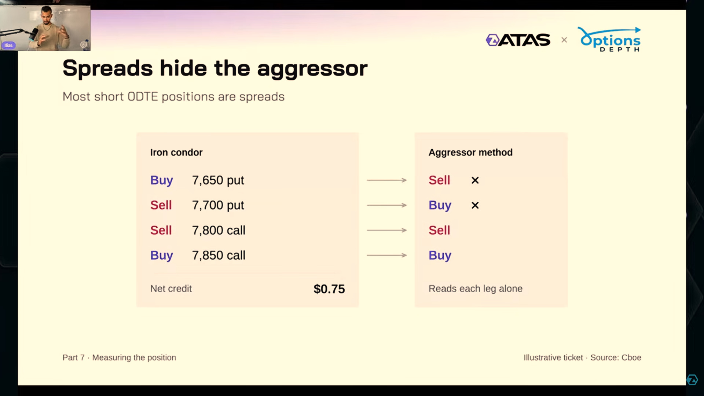
- Spreads hide the aggressor → Las estrategias de varias patas pueden ocultar el agresor
- Buy / Sell → Comprar / vender
- Aggressor method → Método de clasificación por agresor
- Net credit → Crédito neto
- Reads each leg alone → Interpreta cada pata por separado
El iron condor de ejemplo recibe 0,75 puntos. Dos patas quedan mal clasificadas en el esquema; no prueba una tasa general de error.
ILIAS-L2-053 · Material del seminario ATAS × OptionsDepth / Ilias, capturado y aportado por el usuario. Lección 2 · Capítulo relacionado, inicio aportado · 46:01. Minutaje exacto de esta captura pendiente de localizar. Original inglés intacto; pulse la imagen para ampliarla.
Participante, sentido y cantidad
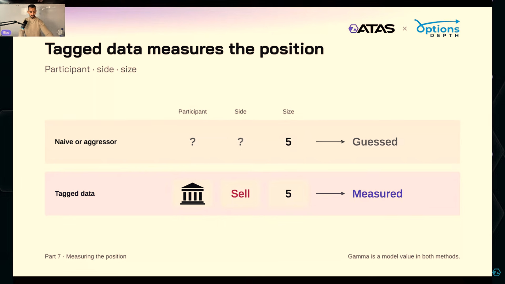
- Tagged data measures the position → Los datos etiquetados identifican la posición: afirmación del proveedor
- Participant / Side / Size → Tipo de participante / compra o venta / cantidad
- Guessed / Measured → Inferido / medido
- Gamma is a model value in both methods → Gamma procede de un modelo en ambos métodos
Etiquetar actividad mejora la información de entrada; no convierte en observado un reajuste futuro ni audita por sí solo el inventario reconstruido.
ILIAS-L2-054 · Material del seminario ATAS × OptionsDepth / Ilias, capturado y aportado por el usuario. Lección 2 · Capítulo relacionado, inicio aportado · 46:01. Minutaje exacto de esta captura pendiente de localizar. Original inglés intacto; pulse la imagen para ampliarla.
10. Perfil por strike: contribuciones en una fotografía actual
Un strike profile organiza la contribución de cada precio de ejercicio al riesgo del grupo analizado, usando el precio S y la hora actuales. Se eligen la sensibilidad y el conjunto de vencimientos. Las barras pueden mostrar posición, Gamma, Charm u otras exposiciones: son magnitudes distintas y requieren leer el título y la unidad.
En el perfil Gamma de la captura, el eje vertical contiene strikes y la longitud horizontal representa exposición en ES por punto. La barra de K = 7.800 no significa «la Gamma total cuando S llegue a 7.800»: representa lo que las opciones de ese strike aportan ahora, con S = 7.750 en la ilustración.
Cómo leerlo
- Fije hora del dato, S actual, vencimientos y clase de participante.
- Compruebe si muestra contratos o sensibilidades ponderadas, su signo y unidades.
- Localice concentraciones cercanas y derive el flujo bajo el cambio concreto.
- Consulte el agregado: otras posiciones pueden compensar esa barra.
- Actualice al cambiar S, tiempo, IV o inventario; conserve la fotografía anterior para comparar.
Una concentración Gamma positiva por encima de S puede contribuir a ventas si el precio sube hacia ella; por debajo, a compras si cae. La sesión interpreta esas condiciones como posible resistencia o apoyo. No basta el nivel visual para confirmar ni medir cuánto afectará al precio. Un strike con Gamma negativa puede favorecer aceleración bajo movimientos en cualquiera de las dos direcciones.
En el perfil Charm, negativo significa compras y positivo ventas con tiempo transcurrido. La metáfora de imán corresponde al inventario largo y la forma temporal ilustrados; un perfil de posición por sí solo no representa Charm. Al combinar ambas vistas, se preserva la distinción entre el reloj y la reacción al precio.
0DTE destaca un componente de la sesión; todos los vencimientos aproximan otro universo. Ninguno se adopta como ajuste universal preferido. El pasaje transcrito sobre preferencias resulta ambiguo. Registre el filtro elegido y compare el mismo universo en perfil y mapa antes de extraer una diferencia.
Lección 2 · Perfiles por strike: capítulo aportado · 51:54 · Lección 2 · La fotografía cambia, pasaje transcrito · 57:06
Una barra por strike al precio actual
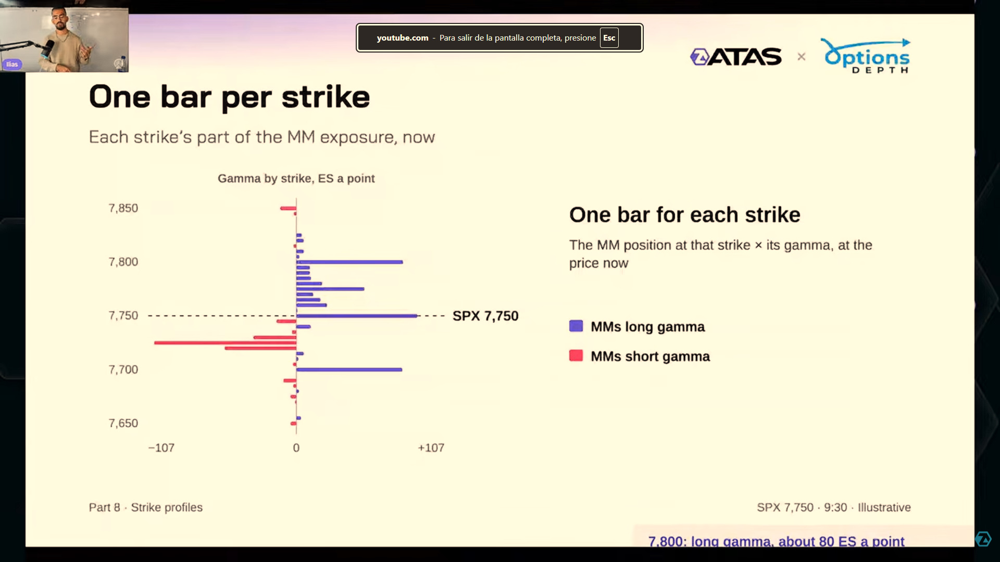
- One bar per strike → Una barra por precio de ejercicio
- Gamma by strike, ES a point → Gamma por strike, expresada en ES por punto
- At the price now → Evaluado al precio actual
- MMs long / short gamma → Gamma neta positiva / negativa
Eje vertical: strikes. Longitud horizontal: contribución a Gamma evaluada con S actual. No es una curva de exposición a otros precios futuros.
ILIAS-L2-056 · Material del seminario ATAS × OptionsDepth / Ilias, capturado y aportado por el usuario. Lección 2 · Capítulo relacionado, inicio aportado · 51:54. Minutaje exacto de esta captura pendiente de localizar. Original inglés intacto; pulse la imagen para ampliarla.
Charm por strike
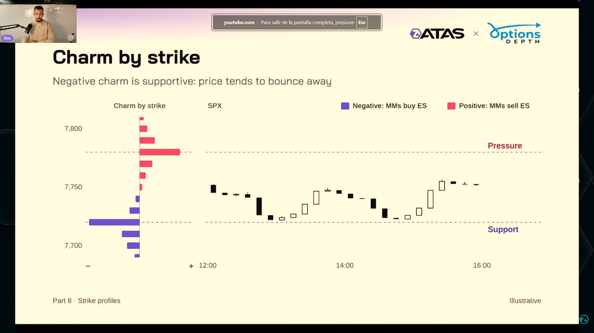
- Charm by strike → Charm por precio de ejercicio
- Negative: MMs buy ES → Charm negativo: compras ES
- Positive: MMs sell ES → Charm positivo: ventas ES
- Pressure / Support → Presión vendedora / apoyo comprador
Las velas son ilustrativas. El eje horizontal del perfil no muestra aquí una escala temporal explícita de Charm: no extraer cantidades ejecutables.
ILIAS-L2-059 · Material del seminario ATAS × OptionsDepth / Ilias, capturado y aportado por el usuario. Lección 2 · Capítulo relacionado, inicio aportado · 51:54. Minutaje exacto de esta captura pendiente de localizar. Original inglés intacto; pulse la imagen para ampliarla.
La metáfora del imán
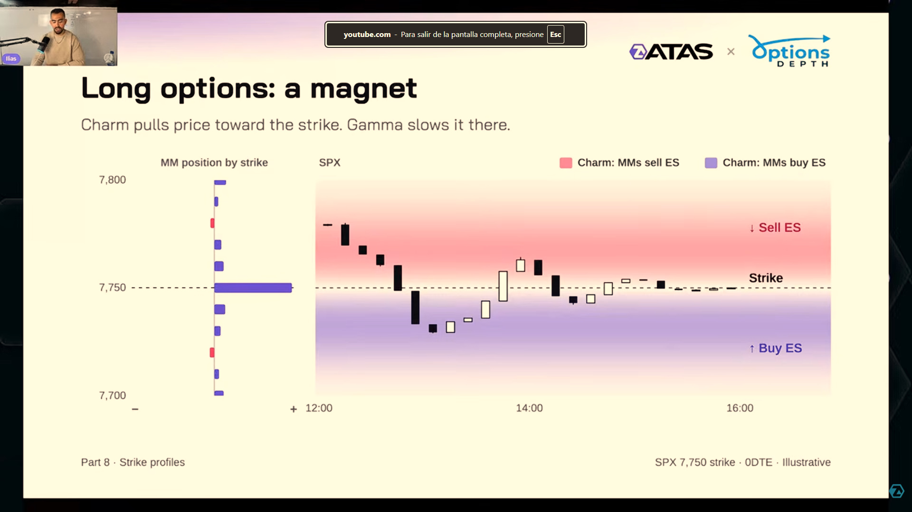
- Long options: a magnet → Opciones compradas: la metáfora de un imán
- Charm pulls price toward the strike. Gamma slows it there → Charm puede favorecer aproximación al strike
- Gamma puede amortiguar allí → undefined
- MM position by strike → Posición del creador por precio de ejercicio
- Sell ES / Buy ES → Vender ES / comprar ES
Distinga posición, sensibilidad y flujo. Una zona de atracción es una hipótesis condicional, no una obligación del precio.
ILIAS-L2-060 · Material del seminario ATAS × OptionsDepth / Ilias, capturado y aportado por el usuario. Lección 2 · Capítulo relacionado, inicio aportado · 51:54. Minutaje exacto de esta captura pendiente de localizar. Original inglés intacto; pulse la imagen para ampliarla.
11. Del perfil a una superficie de exposición
La superficie plantea otra pregunta: recalcular todo el libro a cada precio hipotético S y a cada instante futuro t. Para un precio dado, cada contrato conserva su propio strike; se calcula su sensibilidad y se suma ponderada por q. Al repetirlo en precios y horas se obtiene un conjunto de escenarios.
Conversión simplificada SPX → ES/punto = Gamma del libro × 100 / 50
La curva negra de la figura es la suma de contribuciones individuales en un instante. La superficie 3D añade tiempo: precio, tiempo y altura de exposición. El mapa de calor (heatmap) aplana la altura en colores, manteniendo precio y tiempo como ejes. La altura no representa beneficio ni probabilidad de visitar una zona.
| Vista | Categoría o eje de precio | Pregunta |
|---|---|---|
| Perfil por strike | Strikes K; S actual fijo | ¿Qué contribuye cada strike ahora? |
| Curva agregada | Precios hipotéticos S; hora fija | ¿Qué exposición total habría en cada precio? |
| Superficie / mapa | Precios hipotéticos S y horas | ¿Qué exposición total habría en cada estado futuro? |
Las figuras del seminario son ilustrativas y así se identifican. No documentan una trayectoria real ni una prueba histórica. Colores y leyendas cambian con el módulo: en la captura de tres superficies, morado significa Gamma positiva en el primer panel y compras asociadas a Charm en el segundo; turquesa significa Vanna positiva en el tercero. No existe un color comprador universal.
Una intensidad mayor representa más exposición según la escala del módulo; no garantiza más influencia sin comparar liquidez y flujos. La proyección debe declarar universo de opciones, posiciones mantenidas o actualizadas, escenario de IV, vencimientos, unidad y normalización de color. Dos mapas con escala distinta pueden parecer diferentes aunque no haya aumentado su riesgo.
Lección 2 · Superficies y mapas de calor: capítulo aportado · 57:24 · Lección 2 · Recalcular contribuciones, pasaje transcrito · 58:33 · Lección 2 · Agregar precio y tiempo, pasaje transcrito · 59:50
Sumar el libro en cada precio hipotético
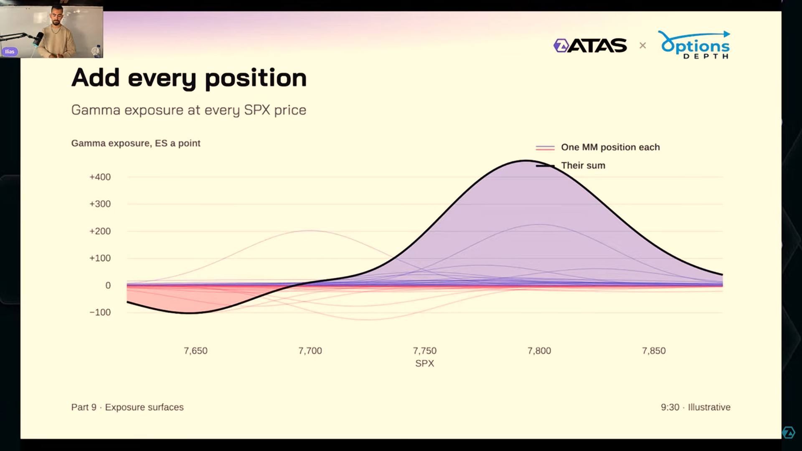
- Add every position → Sumar todas las posiciones
- Gamma exposure at every SPX price → Exposición Gamma para cada precio SPX
- One MM position each / Their sum → Contribuciones individuales / su suma
- ES a point → ES por punto
La línea negra suma exposiciones de todo el libro recalculadas en cada S. El eje horizontal ahora es precio hipotético, no strike como categoría.
ILIAS-L2-064 · Material del seminario ATAS × OptionsDepth / Ilias, capturado y aportado por el usuario. Lección 2 · Capítulo relacionado, inicio aportado · 57:24. Minutaje exacto de esta captura pendiente de localizar. Original inglés intacto; pulse la imagen para ampliarla.
Tres mapas, tres leyendas
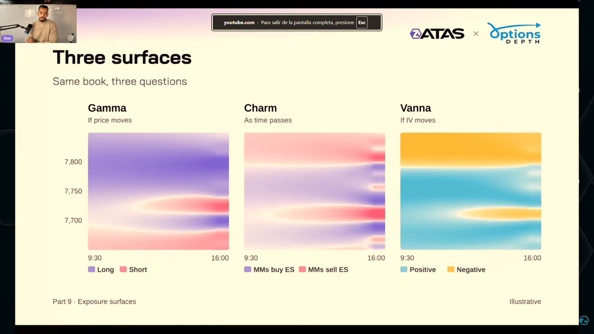
- Three surfaces → Tres superficies
- Same book, three questions → El mismo libro, tres preguntas
- If price moves / As time passes / If IV moves → Si cambia el precio / al transcurrir el tiempo / si cambia la IV
- Long / Short → Gamma positiva / negativa
- Positive / Negative → Vanna positiva / negativa
Gamma: morado positivo, rojo negativo. Charm: morado compras, rojo ventas. Vanna: turquesa positiva, amarillo negativa. El reloj horizontal es el de la ilustración, sin conversión a Madrid.
ILIAS-L2-070 · Material del seminario ATAS × OptionsDepth / Ilias, capturado y aportado por el usuario. Lección 2 · Capítulo relacionado, inicio aportado · 57:24. Minutaje exacto de esta captura pendiente de localizar. Original inglés intacto; pulse la imagen para ampliarla.
12. Interpretar escenarios sin convertirlos en predicciones
El marcador Now («ahora») separa el pasado mostrado y los estados proyectados. La fuente describe actualización de proyecciones durante la sesión. Una superficie posterior puede cambiar porque hay nuevos contratos, nuevas posiciones o IV distinta. Para evaluar un escenario hay que conservar el mapa disponible antes del resultado, no reconstruirlo después y atribuirle anticipación.
En la ilustración, el precio podría entrar en una región Gamma negativa y encontrar cobertura a favor del movimiento; al pasar a positiva, el mecanismo cambia hacia amortiguación. Esto explica un posible cambio de comportamiento, sin fijar velocidad, probabilidad, destino ni nivel de invalidación de una operación.
«Con el inventario de las 10:00, si S cae hasta X y la IV sigue el supuesto indicado, el modelo estima Gamma neta negativa y compras por Charm. Ambos componentes pueden oponerse». Se registra qué domina según las magnitudes, no solo colores. Si entra nuevo inventario, cambia IV o el flujo observado contradice el ajuste esperado, se revisa el escenario y se conserva el original.
El mapa no es un libro de órdenes límite. Las coberturas podrían aparecer al cambiar las condiciones y ejecutarse con distintos instrumentos. No todas las órdenes visibles derivan de opciones ni todos los cambios del precio se atribuyen a MM. Un escenario cambia de validez si cambian sus entradas; una concentración local no constituye una regla probada.
Lección 2 · Condición de posiciones constantes, pasaje transcrito · 1:00:55 · Lección 2 · Gráficos ilustrativos y cambio de zona Gamma, pasaje transcrito · 1:01:42 · Lección 2 · Actualizar la proyección, pasaje transcrito · 1:05:37
Separar pasado y proyección
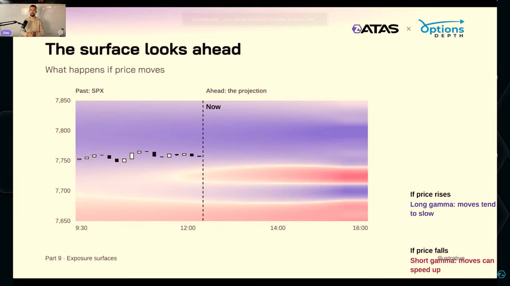
- The surface looks ahead → La superficie proyecta hacia adelante
- Past: SPX / Ahead: the projection → Pasado: SPX / futuro: proyección
- Now → Ahora
- Moves tend to slow / can speed up → Los movimientos pueden amortiguarse / acelerarse
Las velas a la izquierda de Now son el pasado de la ilustración; a la derecha hay escenarios de exposición, sin una trayectoria futura de velas.
ILIAS-L2-074 · Material del seminario ATAS × OptionsDepth / Ilias, capturado y aportado por el usuario. Lección 2 · Capítulo relacionado, inicio aportado · 57:24. Minutaje exacto de esta captura pendiente de localizar. Original inglés intacto; pulse la imagen para ampliarla.
13. Organizar las vistas para estudiar
«Módulos de superposición de ataques» es una traducción automática confusa de vistas por strikes: precios de ejercicio. «Encanto» se normaliza a Charm; «perfiles de huelga» a perfiles por strike. Los originales se conservan sin corregir para permitir revisión.
La sesión explica el montaje conceptual de vistas, pero el material recibido no documenta una instalación ni una secuencia completa de clics en una versión concreta de ATAS. En 1:08:36 comenta una integración posible. No se inventan nombres de indicadores, ajustes exactos, licencias ni un estado de disponibilidad a partir de ese comentario histórico.
- Precio de referencia: identifique SPX para sensibilidades y ES para la cobertura ilustrada; mantenga visibles producto, fecha y zona horaria.
- Perfil: coloque contribuciones por strike, indicando sensibilidad y filtro de vencimientos. Anote el S con que se calculó.
- Mapa Gamma: precio–tiempo con leyenda, unidad, escala y marcador de ahora.
- Mapa Charm: compruebe tiempo transcurrido frente a restante, y si la unidad es por hora, día o intervalo.
- Vanna: lea signo y defina el escenario de IV por contrato; no sustituya la superficie por un número sin declarar la aproximación.
- Registro: guarde capturas anteriores al resultado con hora de actualización, supuestos y observaciones contrapuestas.
Para una configuración ejecutable harían falta plataforma y versión, acceso al proveedor, módulo y manual correspondientes. Esa comprobación queda fuera de lo demostrado en la sesión. Las FAQ oficiales del proveedor, consultadas el 09/10/2026, describen datos y tutoriales; no certifican la instalación concreta del usuario ni una integración ATAS determinada.
Lección 2 · Otros: capítulo aportado · 1:08:28 · Lección 2 · Comentario de integración, pasaje transcrito · 1:08:36
Perfil y superficie: dos preguntas
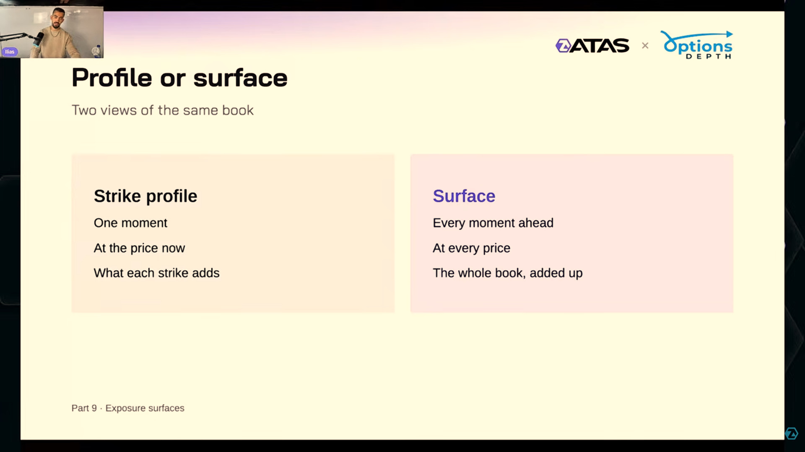
- Profile or surface → Perfil o superficie
- One moment / At the price now → Un instante / al precio actual
- What each strike adds → Qué aporta cada precio de ejercicio
- Every moment ahead / At every price → Instantes futuros / precios hipotéticos
- The whole book, added up → La suma de todo el libro
La comparación define cómo combinar las dos vistas en un espacio de estudio.
ILIAS-L2-075 · Material del seminario ATAS × OptionsDepth / Ilias, capturado y aportado por el usuario. Lección 2 · Capítulo relacionado, inicio aportado · 1:08:28. Minutaje exacto de esta captura pendiente de localizar. Original inglés intacto; pulse la imagen para ampliarla.
14. Ejercicios y taller de cierre
Actividades propias para comprobar comprensión. Cifras ficticias y aproximaciones locales, sin costes ni ejecución real.
1 · Una put pasa de Delta −0,60 a −0,55 al subir S. ¿Gamma es negativo?
No. Delta ha aumentado +0,05. Una put ordinaria comprada tiene Gamma positivo. El signo de la contribución MM depende de si la tiene comprada o vendida.
2 · MM con Gamma neta negativa; S cae. ¿Compra o vende para compensar?
Gamma negativo × cambio de S negativo = aumento de Delta neto. La cobertura objetivo disminuye: vende. Ese componente va a favor de la caída, bajo los supuestos del modelo.
3 · Charm de −10 unidades Delta SPX por hora. Pasa media hora con otras entradas constantes.
Cambio = −10 × 0,5 = −5 unidades Delta SPX = −500 USD/punto. Ajuste compensador: comprar 10 ES. Si el proveedor deriva respecto al tiempo restante, primero convierta el signo.
4 · Vanna neta negativa y caída de IV. ¿Qué reajuste se deriva?
Negativo × negativo = incremento de Delta. Se reduce la cobertura objetivo: ventas. Vanna positiva con IV al alza también implica ventas, por otro producto de signos.
5 · Una barra larga en K = 7.800. ¿Muestra Gamma total con S = 7.800?
No en el perfil por strike: muestra la contribución de ese strike evaluada con S y hora actuales. La curva o superficie agregada recalcula todo el libro a precios hipotéticos.
6 · El mapa es morado. ¿Hay que comprar?
No puede deducirse. Hay que leer módulo y leyenda. En Gamma podría significar positiva y ventas ante una subida; en Charm, compras por el reloj. Tampoco una presión de cobertura es por sí sola una instrucción de entrada.
7 · La actividad está etiquetada por tipo de participante. ¿La superficie es observada?
La actividad es una entrada mejor identificada según su alcance; reconstruir inventario y proyectar sensibilidades son otros pasos. El mapa de escenarios y los ajustes futuros siguen siendo calculados y condicionales.
Recalcular una cobertura en dos estados
MM corto de 300 calls SPX, Delta inicial 0,40. Después, efectos unitarios aproximados: Gamma +0,01 por punto con S +2 puntos; Charm −0,02 por hora y tiempo +0,5 h; Vanna +0,005 por punto porcentual e IV −2 puntos porcentuales. Posiciones constantes; sensibilidades unitarias de la opción comprada.
- Calcule Delta unitario nuevo.
- Calcule coberturas inicial y final en ES y el ajuste.
- Explique por qué el signo de la posición corta afecta a cada contribución.
- Indique qué datos faltan para atribuir el ajuste a una operación real.
Ver solución razonada
Cambio unitario = 0,01 × 2 − 0,02 × 0,5 + 0,005 × (−2) = 0. Delta nuevo ≈ 0,40. D inicial y final = −300 × 0,40 × 100 = −12.000 USD/punto; cobertura teórica +240 ES; ajuste neto cero. Los efectos se compensan aunque cada uno sea distinto de cero. Por posición corta, el efecto agregado de Gamma es −6 unidades Delta SPX y los de Charm y Vanna +3 cada uno. Hacen falta inventario vigente, IV por serie, otras exposiciones, instrumento y política de cobertura y evidencia de ejecución. No se identifica una compra en la cinta con este cálculo.
Comprobación final: poder explicar dato → posición → sensibilidad con unidad y signo → cambio supuesto → cobertura → límites de la interpretación.
15. Glosario, fuentes y recursos
| Original | Lectura en español |
|---|---|
| Strike / strike profile | Precio de ejercicio / perfil de contribuciones por strike |
| Exposure / positioning | Sensibilidad agregada / inventario de posiciones |
| Long / short Gamma | Gamma neta positiva / negativa |
| Charm | Cambio de Delta por tiempo; aquí transcurrido |
| Vanna / IV | Cambio de Delta por IV / volatilidad implícita |
| Supportive / suppressive | Presión compradora / vendedora en el supuesto de cobertura |
| Exposure surface / heatmap | Superficie de exposición / mapa de calor |
| Gamma flip / pinning | Cambio de signo de Gamma agregada / permanencia cerca de una zona |
| Tagged data / aggressor | Datos etiquetados por participante / lado que toma liquidez |
| Spread / leg / midpoint | Estrategia de varias patas (o diferencia bid–ask, según contexto) / pata / punto medio |
| Now / projection | Ahora / escenario calculado futuro |
| IV crush | Caída brusca de volatilidad implícita |
Fuente principal: Understanding Options Analytics · Ilias · ATAS × OptionsDepth · YouTube. Texto español automático aportado, primeras/últimas marcas 00:16–1:11:48; esos extremos no certifican integridad ni duración audiovisual. Fuente en YouTube; transcripción conservada en el archivo del proyecto. El manual reorganiza y parafrasea, normalizando traducciones evidentes y conservando incertidumbres materiales.
Se han inspeccionado las capturas seleccionadas y fotogramas de los clips aportados. No se ha auditado audiovisualmente el seminario completo ni el audio de los clips. Las figuras conservan el inglés y llevan traducción añadida por el proyecto en leyendas bilingües; los clips no incluyen subtítulos añadidos. Todas las imágenes seleccionadas abren a tamaño completo.
Contraste puntual · 09/10/2026
- OIC / OCC · Gamma: definición y distinción entre sensibilidad unitaria y posición larga o corta.
- OptionsDepth · Charm Exposure Projection: convención por tiempo transcurrido y lectura de sus vistas. Descripción del proveedor, no prueba independiente de predicción.
- OptionsDepth · FAQ: metodología etiquetada declarada; alcance limitado de la consulta.
- Cboe · Especificaciones SPX y CME · Especificaciones ES: multiplicadores para los ejemplos.
Ampliaciones matemáticas del proyecto: aproximación local, conversión de unidades, precauciones ATM y suma por contrato. No se añaden estadísticas de eficacia, reglas de trading ni pasos de configuración no documentados.
Volver a la Lección 1 · Curso ATAS archivado · Galería bilingüe de ambas lecciones